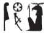

Esna 56
- Location: Next to the South Pillar
- Date: Probably Domitian
-
Hieroglyphic Text
- Bibliography: None
ʿnḫ [nṯr nfr]
ṯnỉ […]
ỉm=s
ẖkr.tw m ḫkr.w n ẖnmw
tȝ-ṯnn nfr-ḥr
nb šw.ty-wr
Live the good god,
distinguished […]
in it,
equipped [with] the regalia of Khnum ():
Tatenen, beautiful of face,
lord of the great double-plumes;55
ḫʿỉ m ʿḥ m nḏm-ỉb
r mȝȝ ỉt-ỉt.w
ḥnʿ psḏ.t=f
He who appears from the palace in joy,
to see the father of fathers,56
along with his Ennead.
swʿb s(w) nb.wy
msỉ s(w) nb.ty
spr=f ḥw.t-ỉt
m ʿb wr
(r) snỉ-tȝ
n nṯr ʿȝ m kȝr=f
The two lords57 purify him,
the two ladies guide him,58
he reaches the Temple of the Father(?)59
in great purity,60
to) kiss the ground
for the great god61 in his shrine.
pr-wr m wnf
pr-nw m tfn
sḥ.w ỉpn m ršw […]
ḏr ʿq s(n) nb=sn
The Per-wer is delighted,
the Per-nu is ecastat[ic],
these chapels are in joy […]
since their lord enters them.
[…ỉt=]f nḥp
dỉ=f n=f nswy.t
m ḥqȝ m tȝ
ḫnty ʿnḫ.w ḏ.t
[…] his [father], the Potter,
he gives to him kingship,
as ruler of the earth,
foremost of the living, eternally.